Two-speaker separation: Librivox, 8 mics
Example 1
| Mixture |

|
|
|---|---|---|
| Ground-truth sources |

SI-SDR = -15.81 dB |

SI-SDR = 16.71 dB |
| Method | Separated source 0 | Separated source 1 |
| TI 64ms x 4 frames, BF2 |
SI-SDR = 8.19 dB |
SI-SDR = 25.00 dB |
| TI 64ms x 4 frames, MN3 |
SI-SDR = 6.62 dB |
SI-SDR = 24.12 dB |
| TI 64ms x 4 frames, block size 3.2s, BF2 |
SI-SDR = 6.01 dB |
SI-SDR = 23.49 dB |
| TI 64ms x 4 frames, block size 3.2s, MN3 |
SI-SDR = 5.70 dB |
SI-SDR = 23.40 dB |
| TV 128ms x 2 frames, BF2 |
SI-SDR = 5.22 dB |
SI-SDR = 23.08 dB |
| TV 128ms x 2 frames, MN3 |
SI-SDR = 4.82 dB |
SI-SDR = 22.72 dB |
Example 2
| Mixture |

|
|
|---|---|---|
| Ground-truth sources |

SI-SDR = -9.98 dB |

SI-SDR = 9.53 dB |
| Method | Separated source 0 | Separated source 1 |
| TI 64ms x 4 frames, BF2 |

SI-SDR = 14.00 dB |
SI-SDR = 22.94 dB |
| TI 64ms x 4 frames, MN3 |

SI-SDR = 10.75 dB |
SI-SDR = 20.76 dB |
| TI 64ms x 4 frames, block size 3.2s, BF2 |
SI-SDR = 10.77 dB |
SI-SDR = 20.45 dB |
| TI 64ms x 4 frames, block size 3.2s, MN3 |
SI-SDR = 9.69 dB |
SI-SDR = 19.81 dB |
| TV 128ms x 2 frames, BF2 |
SI-SDR = 11.56 dB |

SI-SDR = 21.36 dB |
| TV 128ms x 2 frames, MN3 |

SI-SDR = 9.55 dB |
SI-SDR = 19.65 dB |
Example 3
| Mixture |

|
|
|---|---|---|
| Ground-truth sources |

SI-SDR = 10.52 dB |

SI-SDR = -10.74 dB |
| Method | Separated source 0 | Separated source 1 |
| TI 64ms x 4 frames, BF2 |
SI-SDR = 21.79 dB |
SI-SDR = 12.26 dB |
| TI 64ms x 4 frames, MN3 |
SI-SDR = 21.73 dB |
SI-SDR = 10.87 dB |
| TI 64ms x 4 frames, block size 3.2s, BF2 |

SI-SDR = 20.37 dB |
SI-SDR = 11.42 dB |
| TI 64ms x 4 frames, block size 3.2s, MN3 |
SI-SDR = 21.12 dB |
SI-SDR = 10.20 dB |
| TV 128ms x 2 frames, BF2 |
SI-SDR = 19.80 dB |
SI-SDR = 10.61 dB |
| TV 128ms x 2 frames, MN3 |
SI-SDR = 20.93 dB |
SI-SDR = 10.00 dB |
Example 4
| Mixture |
|
|
|---|---|---|
| Ground-truth sources |

SI-SDR = 9.57 dB |
SI-SDR = -8.79 dB |
| Method | Separated source 0 | Separated source 1 |
| TI 64ms x 4 frames, BF2 |
SI-SDR = 14.67 dB |
SI-SDR = 3.78 dB |
| TI 64ms x 4 frames, MN3 |
SI-SDR = 14.75 dB |
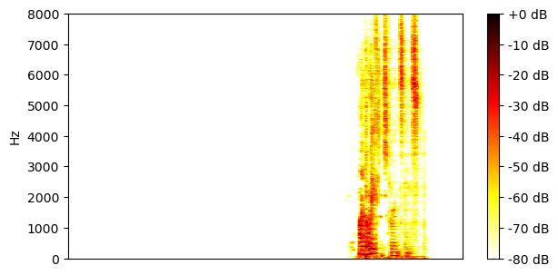
SI-SDR = 3.94 dB |
| TI 64ms x 4 frames, block size 3.2s, BF2 |
SI-SDR = 14.34 dB |
SI-SDR = 3.28 dB |
| TI 64ms x 4 frames, block size 3.2s, MN3 |
SI-SDR = 15.43 dB |
SI-SDR = 4.84 dB |
| TV 128ms x 2 frames, BF2 |
SI-SDR = 13.87 dB |
SI-SDR = 2.79 dB |
| TV 128ms x 2 frames, MN3 |
SI-SDR = 14.55 dB |
SI-SDR = 3.67 dB |
Example 5
| Mixture |

|
|
|---|---|---|
| Ground-truth sources |
SI-SDR = -6.63 dB |

SI-SDR = 6.44 dB |
| Method | Separated source 0 | Separated source 1 |
| TI 64ms x 4 frames, BF2 |
SI-SDR = 8.35 dB |
SI-SDR = 15.47 dB |
| TI 64ms x 4 frames, MN3 |
SI-SDR = 8.53 dB |
SI-SDR = 15.47 dB |
| TI 64ms x 4 frames, block size 3.2s, BF2 |
SI-SDR = 7.49 dB |
SI-SDR = 14.60 dB |
| TI 64ms x 4 frames, block size 3.2s, MN3 |
SI-SDR = 7.07 dB |
SI-SDR = 14.18 dB |
| TV 128ms x 2 frames, BF2 |
SI-SDR = 8.13 dB |
SI-SDR = 15.13 dB |
| TV 128ms x 2 frames, MN3 |
SI-SDR = 6.90 dB |
SI-SDR = 14.03 dB |
Example 6
| Mixture |
|
|
|---|---|---|
| Ground-truth sources |

SI-SDR = -8.62 dB |

SI-SDR = 8.61 dB |
| Method | Separated source 0 | Separated source 1 |
| TI 64ms x 4 frames, BF2 |
SI-SDR = 16.62 dB |
SI-SDR = 24.78 dB |
| TI 64ms x 4 frames, MN3 |
SI-SDR = 13.18 dB |
SI-SDR = 22.00 dB |
| TI 64ms x 4 frames, block size 3.2s, BF2 |
SI-SDR = 12.50 dB |
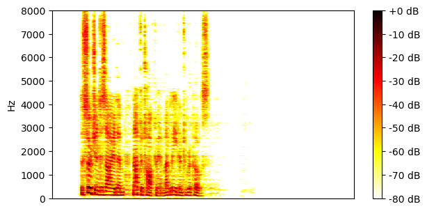
SI-SDR = 21.24 dB |
| TI 64ms x 4 frames, block size 3.2s, MN3 |
SI-SDR = 11.63 dB |
SI-SDR = 20.47 dB |
| TV 128ms x 2 frames, BF2 |
SI-SDR = 12.64 dB |
SI-SDR = 21.47 dB |
| TV 128ms x 2 frames, MN3 |
SI-SDR = 11.12 dB |
SI-SDR = 20.01 dB |
Example 7
| Mixture |
|
|
|---|---|---|
| Ground-truth sources |

SI-SDR = 6.21 dB |

SI-SDR = -6.42 dB |
| Method | Separated source 0 | Separated source 1 |
| TI 64ms x 4 frames, BF2 |
SI-SDR = 13.73 dB |
SI-SDR = 6.98 dB |
| TI 64ms x 4 frames, MN3 |
SI-SDR = 13.50 dB |

SI-SDR = 6.75 dB |
| TI 64ms x 4 frames, block size 3.2s, BF2 |
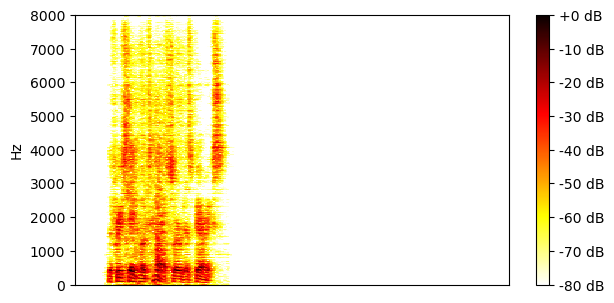
SI-SDR = 10.78 dB |

SI-SDR = 3.21 dB |
| TI 64ms x 4 frames, block size 3.2s, MN3 |
SI-SDR = 11.50 dB |
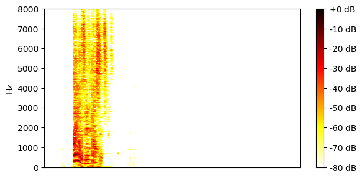
SI-SDR = 4.20 dB |
| TV 128ms x 2 frames, BF2 |
SI-SDR = 8.24 dB |
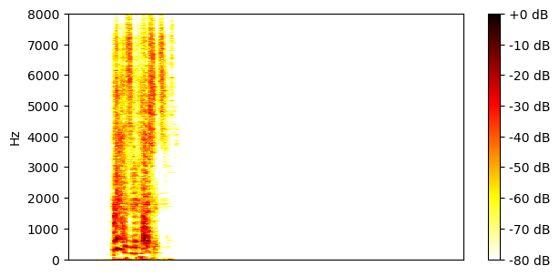
SI-SDR = 1.86 dB |
| TV 128ms x 2 frames, MN3 |

SI-SDR = 9.20 dB |
SI-SDR = 2.35 dB |
Example 8
| Mixture |

|
|
|---|---|---|
| Ground-truth sources |
SI-SDR = 5.40 dB |

SI-SDR = -5.33 dB |
| Method | Separated source 0 | Separated source 1 |
| TI 64ms x 4 frames, BF2 |
SI-SDR = 17.80 dB |

SI-SDR = 12.71 dB |
| TI 64ms x 4 frames, MN3 |
SI-SDR = 15.79 dB |
SI-SDR = 10.13 dB |
| TI 64ms x 4 frames, block size 3.2s, BF2 |
SI-SDR = 13.68 dB |
SI-SDR = 7.80 dB |
| TI 64ms x 4 frames, block size 3.2s, MN3 |
SI-SDR = 14.17 dB |
SI-SDR = 8.32 dB |
| TV 128ms x 2 frames, BF2 |
SI-SDR = 14.98 dB |
SI-SDR = 9.21 dB |
| TV 128ms x 2 frames, MN3 |
SI-SDR = 14.15 dB |
SI-SDR = 8.35 dB |
Example 9
| Mixture |

|
|
|---|---|---|
| Ground-truth sources |
SI-SDR = 9.79 dB |

SI-SDR = -9.69 dB |
| Method | Separated source 0 | Separated source 1 |
| TI 64ms x 4 frames, BF2 |
SI-SDR = 23.46 dB |
SI-SDR = 13.80 dB |
| TI 64ms x 4 frames, MN3 |
SI-SDR = 21.62 dB |
SI-SDR = 11.57 dB |
| TI 64ms x 4 frames, block size 3.2s, BF2 |
SI-SDR = 20.53 dB |
SI-SDR = 10.18 dB |
| TI 64ms x 4 frames, block size 3.2s, MN3 |
SI-SDR = 20.06 dB |
SI-SDR = 9.90 dB |
| TV 128ms x 2 frames, BF2 |
SI-SDR = 21.08 dB |
SI-SDR = 10.66 dB |
| TV 128ms x 2 frames, MN3 |
SI-SDR = 20.09 dB |
SI-SDR = 9.94 dB |
Example 10
| Mixture |

|
|
|---|---|---|
| Ground-truth sources |

SI-SDR = 5.23 dB |

SI-SDR = -5.18 dB |
| Method | Separated source 0 | Separated source 1 |
| TI 64ms x 4 frames, BF2 |
SI-SDR = 20.37 dB |
SI-SDR = 15.85 dB |
| TI 64ms x 4 frames, MN3 |
SI-SDR = 18.45 dB |
SI-SDR = 13.08 dB |
| TI 64ms x 4 frames, block size 3.2s, BF2 |
SI-SDR = 15.38 dB |
SI-SDR = 10.31 dB |
| TI 64ms x 4 frames, block size 3.2s, MN3 |
SI-SDR = 16.62 dB |
SI-SDR = 11.18 dB |
| TV 128ms x 2 frames, BF2 |
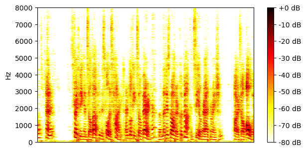
SI-SDR = 14.37 dB |
SI-SDR = 9.31 dB |
| TV 128ms x 2 frames, MN3 |
SI-SDR = 15.89 dB |
SI-SDR = 10.40 dB |
Example 11
| Mixture |

|
|
|---|---|---|
| Ground-truth sources |

SI-SDR = -4.35 dB |

SI-SDR = 4.35 dB |
| Method | Separated source 0 | Separated source 1 |
| TI 64ms x 4 frames, BF2 |
SI-SDR = 23.42 dB |
SI-SDR = 27.69 dB |
| TI 64ms x 4 frames, MN3 |
SI-SDR = 22.24 dB |
SI-SDR = 26.62 dB |
| TI 64ms x 4 frames, block size 3.2s, BF2 |
SI-SDR = 20.41 dB |
SI-SDR = 24.81 dB |
| TI 64ms x 4 frames, block size 3.2s, MN3 |
SI-SDR = 20.49 dB |
SI-SDR = 24.87 dB |
| TV 128ms x 2 frames, BF2 |
SI-SDR = 20.19 dB |
SI-SDR = 24.60 dB |
| TV 128ms x 2 frames, MN3 |
SI-SDR = 19.98 dB |
SI-SDR = 24.36 dB |
Example 12
| Mixture |
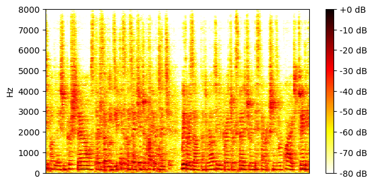
|
|
|---|---|---|
| Ground-truth sources |

SI-SDR = -11.18 dB |

SI-SDR = 11.06 dB |
| Method | Separated source 0 | Separated source 1 |
| TI 64ms x 4 frames, BF2 |
SI-SDR = 11.32 dB |
SI-SDR = 22.19 dB |
| TI 64ms x 4 frames, MN3 |
SI-SDR = 10.13 dB |
SI-SDR = 21.52 dB |
| TI 64ms x 4 frames, block size 3.2s, BF2 |
SI-SDR = 8.51 dB |

SI-SDR = 19.74 dB |
| TI 64ms x 4 frames, block size 3.2s, MN3 |
SI-SDR = 8.31 dB |
SI-SDR = 19.91 dB |
| TV 128ms x 2 frames, BF2 |
SI-SDR = 9.15 dB |
SI-SDR = 20.30 dB |
| TV 128ms x 2 frames, MN3 |
SI-SDR = 8.51 dB |
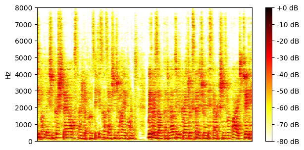
SI-SDR = 19.97 dB |
Example 13
| Mixture |

|
|
|---|---|---|
| Ground-truth sources |

SI-SDR = 2.99 dB |

SI-SDR = -2.99 dB |
| Method | Separated source 0 | Separated source 1 |
| TI 64ms x 4 frames, BF2 |
SI-SDR = 32.41 dB |
SI-SDR = 29.35 dB |
| TI 64ms x 4 frames, MN3 |
SI-SDR = 77.51 dB |
SI-SDR = 74.52 dB |
| TI 64ms x 4 frames, block size 3.2s, BF2 |
SI-SDR = 48.62 dB |
SI-SDR = 48.83 dB |
| TI 64ms x 4 frames, block size 3.2s, MN3 |

SI-SDR = 75.99 dB |
SI-SDR = 73.00 dB |
| TV 128ms x 2 frames, BF2 |
SI-SDR = 43.97 dB |
SI-SDR = 44.19 dB |
| TV 128ms x 2 frames, MN3 |
SI-SDR = 74.43 dB |
SI-SDR = 71.44 dB |
Example 14
| Mixture |

|
|
|---|---|---|
| Ground-truth sources |
SI-SDR = -2.09 dB |

SI-SDR = 2.24 dB |
| Method | Separated source 0 | Separated source 1 |
| TI 64ms x 4 frames, BF2 |
SI-SDR = 12.91 dB |
SI-SDR = 15.22 dB |
| TI 64ms x 4 frames, MN3 |
SI-SDR = 13.71 dB |
SI-SDR = 15.95 dB |
| TI 64ms x 4 frames, block size 3.2s, BF2 |

SI-SDR = 3.61 dB |
SI-SDR = 7.13 dB |
| TI 64ms x 4 frames, block size 3.2s, MN3 |
SI-SDR = 3.53 dB |
SI-SDR = 7.00 dB |
| TV 128ms x 2 frames, BF2 |
SI-SDR = 12.12 dB |
SI-SDR = 14.41 dB |
| TV 128ms x 2 frames, MN3 |
SI-SDR = 13.11 dB |
SI-SDR = 15.35 dB |
Example 15
| Mixture |
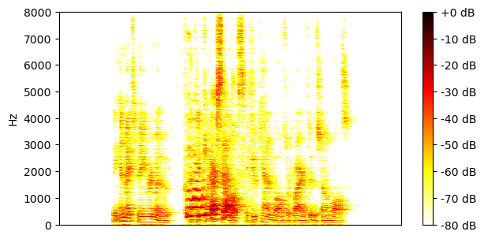
|
|
|---|---|---|
| Ground-truth sources |

SI-SDR = 10.62 dB |

SI-SDR = -11.09 dB |
| Method | Separated source 0 | Separated source 1 |
| TI 64ms x 4 frames, BF2 |
SI-SDR = 22.18 dB |
SI-SDR = 11.60 dB |
| TI 64ms x 4 frames, MN3 |
SI-SDR = 21.85 dB |
SI-SDR = 10.81 dB |
| TI 64ms x 4 frames, block size 3.2s, BF2 |
SI-SDR = 20.74 dB |
SI-SDR = 9.79 dB |
| TI 64ms x 4 frames, block size 3.2s, MN3 |
SI-SDR = 20.83 dB |
SI-SDR = 9.72 dB |
| TV 128ms x 2 frames, BF2 |
SI-SDR = 17.21 dB |

SI-SDR = 5.46 dB |
| TV 128ms x 2 frames, MN3 |
SI-SDR = 17.45 dB |
SI-SDR = 5.84 dB |
Example 16
| Mixture |

|
|
|---|---|---|
| Ground-truth sources |

SI-SDR = -6.56 dB |

SI-SDR = 6.26 dB |
| Method | Separated source 0 | Separated source 1 |
| TI 64ms x 4 frames, BF2 |

SI-SDR = 12.53 dB |
SI-SDR = 18.66 dB |
| TI 64ms x 4 frames, MN3 |
SI-SDR = 10.22 dB |
SI-SDR = 16.85 dB |
| TI 64ms x 4 frames, block size 3.2s, BF2 |
SI-SDR = 9.83 dB |
SI-SDR = 16.21 dB |
| TI 64ms x 4 frames, block size 3.2s, MN3 |

SI-SDR = 9.33 dB |
SI-SDR = 15.99 dB |
| TV 128ms x 2 frames, BF2 |
SI-SDR = 10.64 dB |
SI-SDR = 17.19 dB |
| TV 128ms x 2 frames, MN3 |
SI-SDR = 9.03 dB |
SI-SDR = 15.73 dB |
Example 17
| Mixture |

|
|
|---|---|---|
| Ground-truth sources |

SI-SDR = -27.47 dB |

SI-SDR = 27.30 dB |
| Method | Separated source 0 | Separated source 1 |
| TI 64ms x 4 frames, BF2 |

SI-SDR = -7.11 dB |
SI-SDR = 27.87 dB |
| TI 64ms x 4 frames, MN3 |

SI-SDR = -8.74 dB |
SI-SDR = 27.63 dB |
| TI 64ms x 4 frames, block size 3.2s, BF2 |
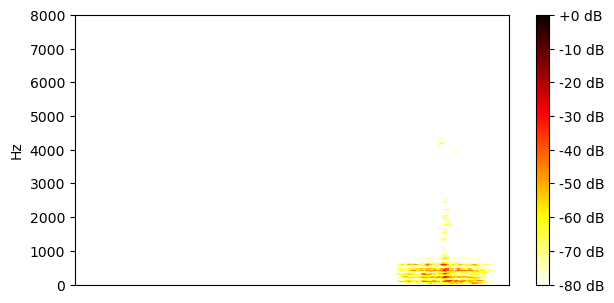
SI-SDR = -6.25 dB |
SI-SDR = 27.83 dB |
| TI 64ms x 4 frames, block size 3.2s, MN3 |
SI-SDR = -7.46 dB |

SI-SDR = 26.62 dB |
| TV 128ms x 2 frames, BF2 |
SI-SDR = -10.50 dB |
SI-SDR = 27.83 dB |
| TV 128ms x 2 frames, MN3 |
SI-SDR = -8.92 dB |
SI-SDR = 27.82 dB |
Example 18
| Mixture |
|
|
|---|---|---|
| Ground-truth sources |

SI-SDR = 9.32 dB |

SI-SDR = -9.15 dB |
| Method | Separated source 0 | Separated source 1 |
| TI 64ms x 4 frames, BF2 |
SI-SDR = 22.58 dB |

SI-SDR = 13.28 dB |
| TI 64ms x 4 frames, MN3 |
SI-SDR = 20.96 dB |
SI-SDR = 11.39 dB |
| TI 64ms x 4 frames, block size 3.2s, BF2 |
SI-SDR = 19.30 dB |
SI-SDR = 9.59 dB |
| TI 64ms x 4 frames, block size 3.2s, MN3 |
SI-SDR = 19.10 dB |
SI-SDR = 9.38 dB |
| TV 128ms x 2 frames, BF2 |
SI-SDR = 19.84 dB |
SI-SDR = 10.19 dB |
| TV 128ms x 2 frames, MN3 |
SI-SDR = 19.19 dB |
SI-SDR = 9.48 dB |
Example 19
| Mixture |

|
|
|---|---|---|
| Ground-truth sources |

SI-SDR = -7.08 dB |

SI-SDR = 7.12 dB |
| Method | Separated source 0 | Separated source 1 |
| TI 64ms x 4 frames, BF2 |
SI-SDR = 18.89 dB |
SI-SDR = 24.83 dB |
| TI 64ms x 4 frames, MN3 |
SI-SDR = 15.17 dB |

SI-SDR = 22.42 dB |
| TI 64ms x 4 frames, block size 3.2s, BF2 |

SI-SDR = 14.60 dB |
SI-SDR = 21.13 dB |
| TI 64ms x 4 frames, block size 3.2s, MN3 |
SI-SDR = 13.80 dB |
SI-SDR = 21.08 dB |
| TV 128ms x 2 frames, BF2 |
SI-SDR = 15.56 dB |
SI-SDR = 21.95 dB |
| TV 128ms x 2 frames, MN3 |
SI-SDR = 13.42 dB |
SI-SDR = 20.71 dB |
Example 20
| Mixture |
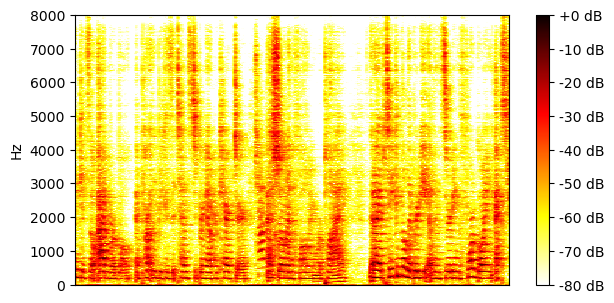
|
|
|---|---|---|
| Ground-truth sources |

SI-SDR = 19.49 dB |

SI-SDR = -19.64 dB |
| Method | Separated source 0 | Separated source 1 |
| TI 64ms x 4 frames, BF2 |
SI-SDR = 25.64 dB |
SI-SDR = 10.55 dB |
| TI 64ms x 4 frames, MN3 |
SI-SDR = 28.69 dB |
SI-SDR = 8.68 dB |
| TI 64ms x 4 frames, block size 3.2s, BF2 |
SI-SDR = 22.40 dB |
SI-SDR = 8.19 dB |
| TI 64ms x 4 frames, block size 3.2s, MN3 |
SI-SDR = 27.53 dB |
SI-SDR = 7.35 dB |
| TV 128ms x 2 frames, BF2 |
SI-SDR = 21.90 dB |
SI-SDR = 6.66 dB |
| TV 128ms x 2 frames, MN3 |
SI-SDR = 27.26 dB |
SI-SDR = 7.10 dB |